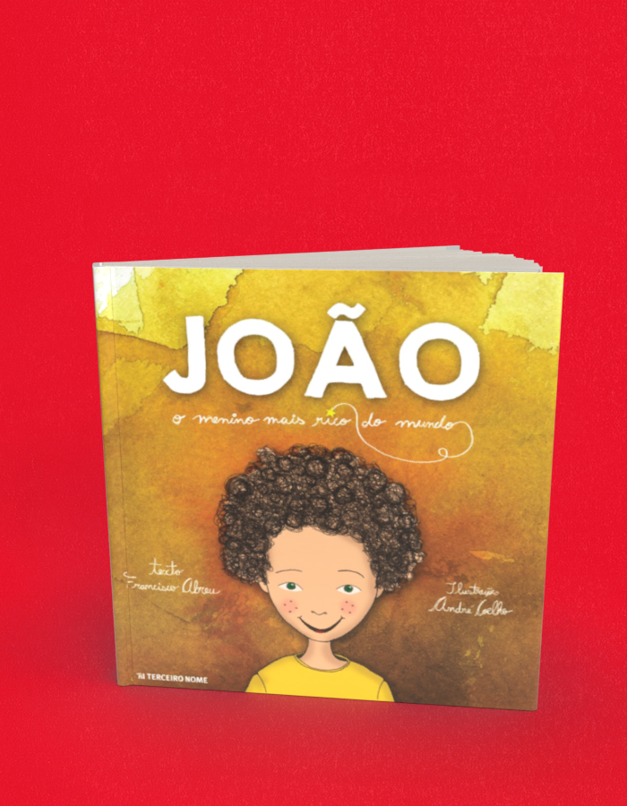

João, o menino mais rico do mundo
A compra acontece no site da livraria, em uma nova aba. Consulte lá os preços e a disponibilidade. Procure pelo título ou ISBN deste livro.
- Autoria / créditos
- Francisco Abreu
- ISBN
- 9788578161538
- Páginas
- 56
- Formato
- 21 cm x 21 cm
- Acabamento
- brochura
Sobre o livro
João é dono da encantadora história do menino catador de sucata que sai pelo mundo à procura de um pai. E encontra. Sabe como? Mergulha com ele no desfile de flores voadoras e descobre. Você ainda não conhece as flores voadoras? Então pega logo uma carona no carrinho de madeira reciclada do esperto João! E boa viagem.
O livro é baseado no espetáculo teatral “O menino mais rico do mundo”, vencedor do Prêmio Femsa de Teatro Infantil e Jovem nas categorias de Melhor Espetáculo com temática de Sustentabilidade, Melhor Roteiro Original, Melhor Ator (Danilo Dal Farra) e Diretora Revelação (Bete Rodrigues), em 2012.
Francisco Abreu nasceu em Minas Gerais, em 1984. No início dos anos 2000, muda-se para São Paulo, onde segue a carreira de ator, nas novelas Balacobaco (TV Record), Marissol (SBT) e Chiquititas (SBT). Em 2005, estreia como diretor, compositor e autor de teatro com o infantil O Cravo e a Rosa, que recebeu cinco indicações ao Prêmio Femsa de Teatro Infantil e Jovem. É presidente da Casa de Cultura Amaramar, no Rio de Janeiro.
André Coelho é designer, ilustrador e artista visual. Ele possui um ateliê em Curitiba, onde desenvolve seus projetos, vende seus desenhos e quadros e promove encontros abertos de desenho.
← Voltar ao catálogo